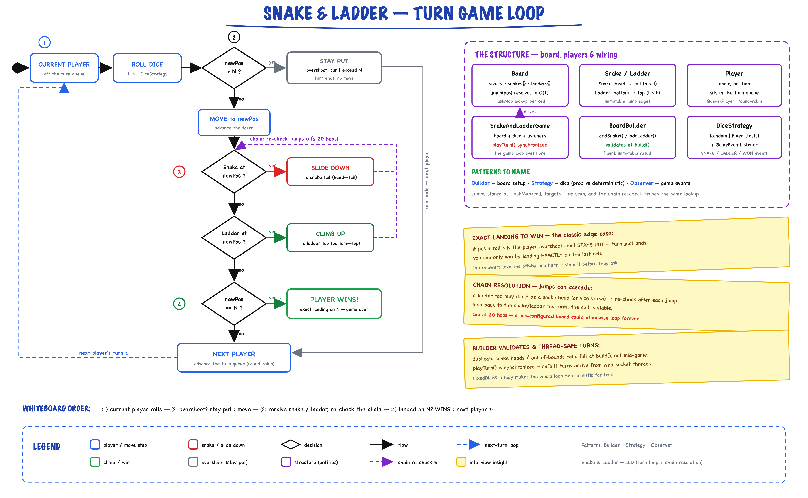

Snake & Ladder // Game
Interview-ready LLD with configurable board, chain resolution, exact-landing win rule, stats tracking, and Builder pattern. 9 files, clean separation.
01 — Requirements
Functional
- Configurable board size (default 100 cells, minimum 10)
- Place snakes (head > tail) and ladders (bottom < top) on the board
- Support 2+ players taking turns rolling a dice
- Landing on a snake head → slide down to tail
- Landing on a ladder bottom → climb up to top
- Support snake/ladder chains (land on ladder top which is a snake head)
- Exact landing required to win — overshoot means stay put
- First player to reach cell N (board size) wins
- Game stats tracking: total rolls, snake hits, ladder hits, roll frequency
Non-Functional
- Thread-safe — synchronized game turns, safe for concurrent access
- Configurable dice — variable number of faces (default 6)
- Extensible — easy to add new rules (extra turn on 6, power-ups)
- Validation — snakes/ladders within bounds, no duplicate positions, no overlap
- Safety guard — max 10,000 moves to prevent infinite loops
02 — Core Entities
| Entity | Type | Key Fields |
|---|---|---|
| SnakeAndLadderGame | Engine | boardSize, snakeMap, ladderMap, players, dice, stats, currentPlayerIndex, gameOver, winner |
| Player | Entity | id (PlayerId), name, position — identity via UUID, equals/hashCode on id |
| Snake | Value Object | head, tail — invariant: head > tail, validated in constructor |
| Ladder | Value Object | bottom, top — invariant: bottom < top, validated in constructor |
| Dice | Value Object | sides, Random — roll() returns [1, sides] |
| GameConfig | Configuration | boardSize, numSnakes, numLadders, diceSides — static standard() factory |
| GameResult | Value Object | winner (Player), totalMoves |
| GameStats | Tracker | totalRolls, rollFrequency (Map), snakeHits, ladderHits |
| PlayerId | Value Object | String value — UUID-based, immutable identity |
Enums & States
| Type | Values / Notes |
|---|---|
| gameOver | boolean — false (in progress), true (someone won) |
| GameConfig.standard() | 100 cells, 8 snakes, 8 ladders, 6-sided dice |
03 — Design Patterns
Four patterns, each earning its place in an interview discussion.
Strategy — Dice Rolling
Dice encapsulates the rolling algorithm. Swap a fair dice for a loaded dice, multiple dice, or a test-friendly deterministic dice — zero changes to the game engine.
Observer — Game Events
GameStats observes every roll, snake hit, and ladder hit. Add loggers, UI updaters, or analytics collectors without touching the game loop.
Factory / Builder — Board Setup
Board.builder(100).addSnake(99,10).addLadder(2,38).build() — fluent API with validation on build. GameConfig.standard() is a static factory for default configs.
Template Method — Game Flow
The playTurn() method defines the skeleton: roll → move → resolve snakes/ladders → check win → advance turn. Subclasses or extensions can override individual steps.
04 — Board Setup & Validation
Key insight: Snakes and ladders are stored as HashMap<Integer, Integer> for O(1) lookup. Validation happens at construction time — fail fast, not at runtime.
Builder Pattern (from README model)
Board board = Board.builder(100) .addSnake(99, 10) .addSnake(65, 25) .addLadder(2, 38) .addLadder(28, 84) .build(); // validates bounds and constraints
Validation Rules
| Rule | Implementation |
|---|---|
| Board size ≥ 10 | Builder constructor throws if size < 10 |
| Snake: head > tail | Snake constructor validates |
| Ladder: bottom < top | Ladder constructor validates |
| Within bounds | head/top ≤ boardSize, tail/bottom ≥ 1 |
| No duplicate positions | snakeMap/ladderMap rejects duplicates at construction |
| No cycle detection | Chain resolution capped at 20 iterations (safety guard) |
Game Engine Construction
// Actual implementation uses HashMap lookups this.snakeMap = new HashMap<>(); for (Snake s : snakes) { if (snakeMap.containsKey(s.getHead()) || s.getHead() > boardSize) throw new IllegalArgumentException("Invalid snake: " + s); snakeMap.put(s.getHead(), s.getTail()); } // Same pattern for ladderMap
05 — Game Flow
Template Method: playTurn() defines the fixed skeleton. Each step is a separate concern.

The turn game loop: current player rolls → if pos + roll > N they overshoot and stay put → otherwise move, then resolve snake/ladder jumps and re-check the chain (a ladder top may be a snake head; capped at 20 hops) → landing exactly on N wins, else the turn passes to the next player. On the right: Board / Snake / Ladder / Player entities and the Builder / Strategy / Observer patterns.
playTurn() — The Core Loop
public synchronized String playTurn() { if (gameOver) return "Game is already over. Winner: " + winner.getName(); Player player = players.get(currentPlayerIndex); int roll = dice.roll(); stats.recordRoll(roll); int oldPos = player.getPosition(); int newPos = oldPos + roll; // Overshoot: must land exactly on boardSize if (newPos > boardSize) { advanceTurn(); return player.getName() + " stays at " + oldPos + " (overshoot)"; } player.setPosition(newPos); newPos = resolvePosition(newPos, log); // chain snakes/ladders player.setPosition(newPos); if (newPos == boardSize) { gameOver = true; winner = player; return player.getName() + " WINS!"; } advanceTurn(); }
06 — Key Algorithms
Chain Resolution (Snake/Ladder Chains)
Time: O(k) where k = chain length (capped at 20) · Space: O(1)
private int resolvePosition(int pos, StringBuilder log) {
int maxChain = 20; // safety guard against infinite cycles
while (maxChain-- > 0) {
if (snakeMap.containsKey(pos)) {
int dest = snakeMap.get(pos);
log.append(" [SNAKE " + pos + "->" + dest + "]");
stats.recordSnakeHit();
pos = dest;
} else if (ladderMap.containsKey(pos)) {
int dest = ladderMap.get(pos);
log.append(" [LADDER " + pos + "->" + dest + "]");
stats.recordLadderHit();
pos = dest;
} else {
break;
}
}
return pos;
}
Why the cap? If someone misconfigures a circular chain (snake tail = ladder bottom, ladder top = snake head), this prevents an infinite loop.
Full Game Loop
Time: O(turns × chain_length) · Guard: 10,000 move limit
public GameResult playFull() { int moves = 0; while (!gameOver) { playTurn(); moves++; if (moves > 10_000) throw new RuntimeException("Exceeded 10000 moves"); } return new GameResult(winner, moves); }
Turn Advancement
private void advanceTurn() { currentPlayerIndex = (currentPlayerIndex + 1) % players.size(); }
Circular rotation via modulo. Supports any number of players.
07 — Special Rules
Extensible Rules (Interview Discussion Points)
| Rule | How to Add |
|---|---|
| Extra turn on 6 | After roll, if roll == dice.getSides(), don't call advanceTurn(). Same player goes again. |
| Three 6s penalty | Track consecutive sixes counter per player. On 3rd six, reset to position 0 and advance turn. |
| Power-ups on cells | Add a Map<Integer, PowerUp> alongside snakeMap/ladderMap. Check after chain resolution. |
| Multiple dice | Change Dice to DiceSet that rolls N dice and sums. Strategy pattern keeps game engine unchanged. |
08 — Thread Safety
| Mechanism | Where | Why |
|---|---|---|
| synchronized | playTurn() method | Only one thread can execute a turn at a time — prevents race conditions on position updates and turn order |
| HashMap | snakeMap, ladderMap | Read-only after construction — effectively immutable, inherently thread-safe |
| Collections.unmodifiableList | getPlayers() | Prevents external mutation of the player list |
| Fail-fast constructor | Snake, Ladder, Dice | All validation at construction — objects are valid from birth |
"The synchronized keyword on playTurn() ensures turn atomicity. Since snakeMap and ladderMap are never modified after construction, they're effectively immutable and safe for concurrent reads."
09 — Service API
What to write on the whiteboard first.
class SnakeAndLadderGame { // Construction SnakeAndLadderGame(boardSize, List<Snake>, List<Ladder>, List<Player>, diceSides); // Core gameplay String playTurn(); // one turn, returns log GameResult playFull(); // play until someone wins // Queries boolean isGameOver(); Player getWinner(); Player getCurrentPlayer(); List<Player> getPlayers(); // unmodifiable GameStats getStats(); // rolls, snake/ladder hits } // Supporting classes class Snake(head, tail); // head > tail class Ladder(bottom, top); // bottom < top class Dice(sides); // roll() -> [1, sides] class Player(name); // position starts at 0 class GameConfig.standard(); // 100, 8, 8, 6 class GameResult(winner, totalMoves); class GameStats(); // recordRoll, recordSnakeHit, recordLadderHit
10 — Happy Path Flow
Trace this end-to-end in the interview.
ladders = [Ladder(2,38), Ladder(7,14), Ladder(15,31), Ladder(28,84), Ladder(51,67), Ladder(71,91)]
GameStats{rolls=47, snakes=5, ladders=8}
11 — Key Data Structures
// Core game engine stores Map<Integer, Integer> snakeMap = new HashMap<>(); // head -> tail (O(1) lookup) Map<Integer, Integer> ladderMap = new HashMap<>(); // bottom -> top (O(1) lookup) List<Player> players = new ArrayList<>(); // index-based turn rotation int currentPlayerIndex; // modulo rotation // Stats tracking Map<Integer, Integer> rollFrequency = new HashMap<>(); // dice value -> count int totalRolls, snakeHits, ladderHits; // Player identity PlayerId id = PlayerId.generate(); // UUID-based value object // Why HashMap over array? // Board is sparse: only ~16 cells have snakes/ladders out of 100. // HashMap gives O(1) lookup with minimal memory. // Array[100] would work but wastes space for larger boards.
12 — Interview Follow-up Q&A
How would you generalize the board size?
How would you support multiple dice?
How would you add power-ups (shield, double move, teleport)?
What's the minimum number of rolls to win? (BFS approach)
How would you implement save/resume (persistence)?
How would you scale to multiplayer (100+ concurrent games)?
How do you ensure the dice is fair?
How would you add "extra turn on rolling 6"?
Why HashMap for snakes/ladders instead of a boolean array?
How would you handle disconnections in an online game?
13 — Package Structure
snakeandladder/ ├── config/ │ └── GameConfig.java -- standard() factory, board/dice params ├── model/ │ ├── Player.java -- entity with PlayerId, name, position │ ├── Snake.java -- value object: head > tail │ ├── Ladder.java -- value object: bottom < top │ ├── Dice.java -- configurable faces, roll() │ └── GameResult.java -- winner + totalMoves ├── stats/ │ └── GameStats.java -- rolls, snakeHits, ladderHits, frequency ├── SnakeAndLadderGame.java -- core engine: playTurn(), playFull() └── SnakeAndLadderDemo.java -- showcases full game run
9 files total. Clean separation: config / model / stats / engine / demo.
14 — Patterns Summary
| Pattern | Where | Why |
|---|---|---|
| Builder | Board.builder(size).addSnake().addLadder().build() | Fluent, validated board construction |
| Strategy | Dice (swappable rolling algorithm) | Fair dice, loaded dice, multi-dice — game engine doesn't change |
| Observer | GameStats listens to roll/snake/ladder events | Decouple stats tracking from game logic |
| Factory | GameConfig.standard(), PlayerId.generate() | Encapsulate object creation with defaults |
| Template Method | playTurn() skeleton: roll → move → resolve → win check → advance | Fixed algorithm, extensible steps |
| Value Object | Snake, Ladder, Dice, PlayerId, GameResult | Immutable, validated at construction |
| Entity | Player (mutable position, UUID identity) | Identity-based equality via PlayerId |
9 files · clean separation · every class earns its place